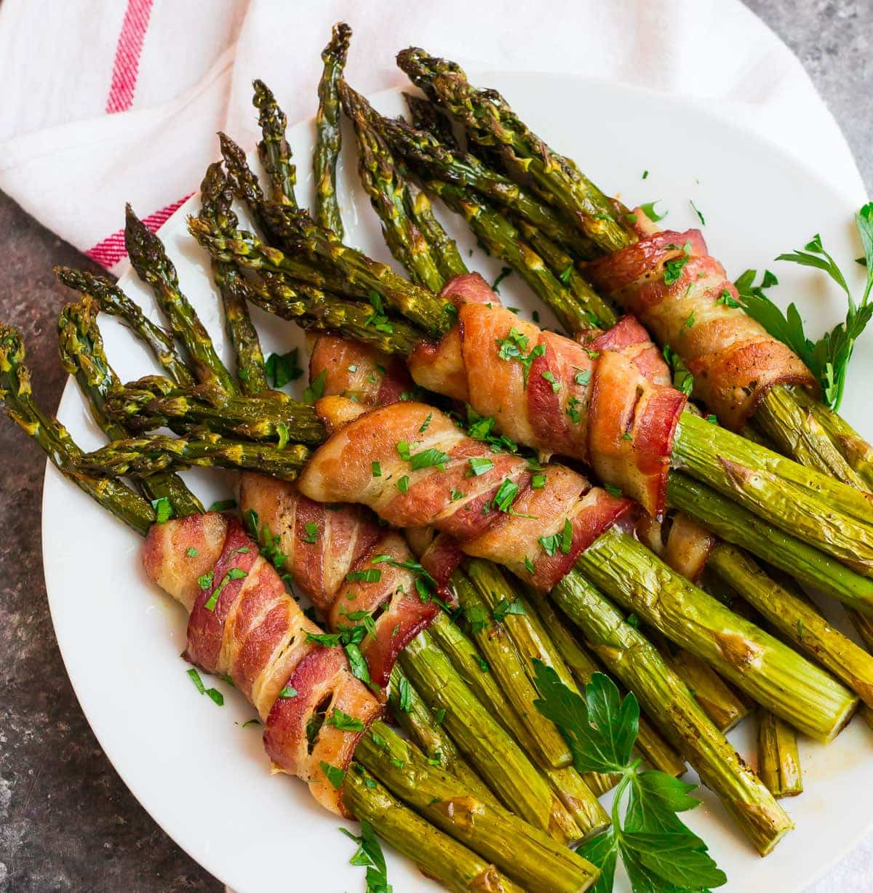

Bacon Wrapped Asparagus

Description
Ever wanted to eat healthy but really love bacon? I have the perfect recipe for you. Asparagus is healthy and bacon is good. Mix them together and magic will ensue!
Ingredients
- 1lb asparagus spears
- 1 tbs extra virgin olive oil
- 1/2 tsp black pepper
- 8 strips thick-cut bacon
Steps
- Place a rack in the center of your oven and preheat the oven to 400 degrees F. For easy cleanup, line a large rimmed baking sheet with parchment paper.
- Place the asparagus in a large bowl or on the prepared baking sheet. Drizzle with the olive oil and sprinkle with salt and pepper. Toss to coat. Count the spears and divide the total number by 8. Gather that number of spears (likely 2 to 4 spears, depending upon their thickness) and hold them together in a single bundle. Starting midway to the top, wrap the bundle with one piece of bacon (overlap the starting end of the bacon slightly to secure it) and place the bundle on the prepared baking sheet, seam-side down. Repeat with the remaining spears.
- Bake until the bacon is crisp and the asparagus is tender, about 22 to 28 minutes, depending upon the thickness of your bacon and how crisp you’d like it to be. Serve warm or at room temperature.
Bacon Wrapped Asparagus